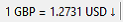

Currency watch is a plugin module which displays currency converted to other values, and
resides in the status bar of the POS (see Home Button and Status Bar Items for more info).
You can get live updates on currency values, converted to other currencies when you wish to
monitor.

The status bar will show the current conversion value, along with an indicator:
↑ = Value has gone up.
- = Value is the same.
↓ = Value has gone down.
If one of the currencies you are watching changes its value, the status bar item will flash red,
moving the mouse over the status bar item will prevent further flashing and show a hint
window with the values: